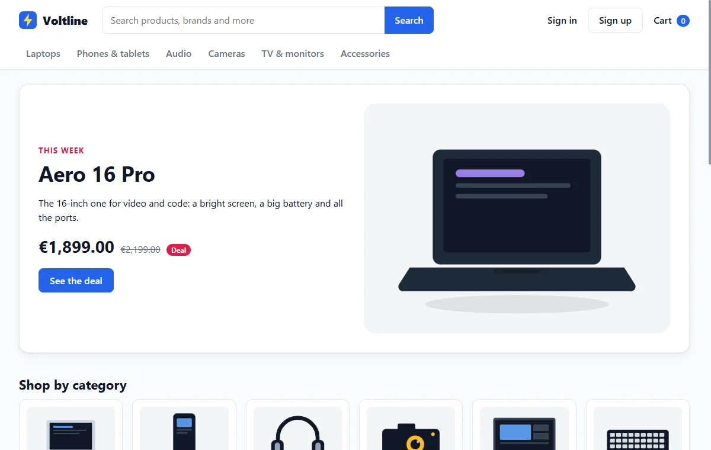
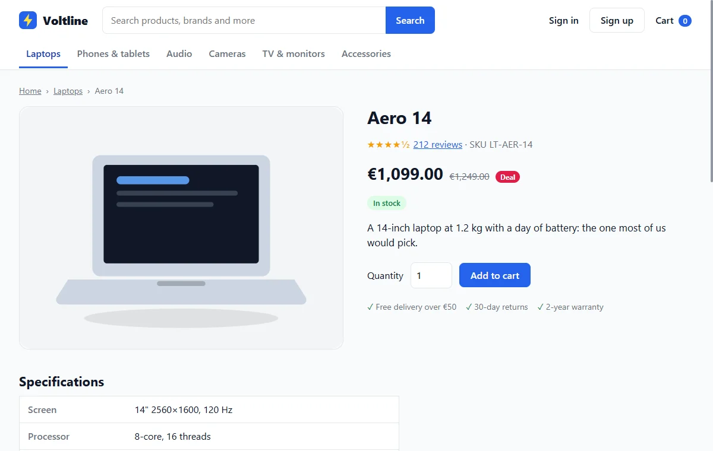

Meet Voltline, your shop
Every example in this manual comes from one imaginary business. For the rest of this manual, pretend it's yours.
You own a small shop
Voltline doesn't exist. It's a made-up online electronics shop that comes with the skill, so there's something real to look at. Every product, price and customer in it is invented.
Imagine you run it. You sell laptops, phones, audio, cameras, TVs and accessories on the web. People browse, fill a cart, and pay by card, PayPal or invoice.


Three kinds of people use it
| Who | What they do |
|---|---|
| A visitor | Anyone who looks around, searches, and fills a cart without signing in |
| A customer | A visitor with an account, who buys and sees their orders |
| An admin | The two people in your warehouse, who move each order along from placed to delivered |
Your problem
Your website is slow. About 12 orders a week come by phone because something on the site stopped the customer, and 68 of every 100 checkouts started are never finished. You blame the old system underneath, so you've decided to move the shop to a new platform in the spring of 2027.
Here's the catch: the new team has to build the same shop, and nobody ever wrote down what that shop does. Without a description, they'd read the old code and guess.
So you need a specification. And since the shop already exists, it can be worked out by reading the shop itself.
What came out
Altogether that's 541 small facts and 1,884 connections between them. That sounds like a lot, but you'll never read them in a row, just as you never read a map from top left to bottom right.
The one rule to remember
Out of everything in that shop, this manual follows one tiny rule, because small things show the idea best:
A cart holds at most five of one product, whether added at once or over several times.
It has a short name, B1, in the way a road has a number. Keep it in mind. Sooner or later a bulk buyer will ask for six, and you'll see what happens.